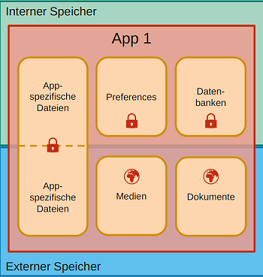

Selektives Ablehnen
von Berechtigungen erst seit API 23 (Android 6.0) möglich. Vorher
wurden sämtliche Berechtigungen beim Installieren der App erteilt
oder die App nicht installiert. Einmaliges Erlauben seit API 30 (Android 11.0), wie auch automatisches Zurücksetzen vom System.
Nachträchliches Entziehen
von Berechtigungen ist jederzeit möglich, vom User oder vom System.
Check im Code also vor jeder Verwendung einer API nötig, sonst
fliegt SecurityException. App wird beim Anpassen von Berechtigungen sofort beendet.
Best Practices:
Nur anfordern, was wirklich benötigt wird. Im Kontext der Verwendung
anfordern. Transparente Erklärungen. Abbruch ermöglichen.
Verweigerung berücksichtigen und Alternativen anbieten.
uses-permission
im Manifest resultiert auch in einem Filter für den Google Play
Store. Beispielsweise: App wird nur für Geräte mit Kamera angeboten.
Um das auszuschalten das uses-feature verwenden, mit android:required=false.
xxxxxxxxxx<uses-permission android:name="android.permission.CAMERA" /><uses-permission android:name="android.permission.CAMERA" android:maxSdkVersion="28" /><!-- Obergrenze API: neuer wird die Berechtigung nicht mehr benötigt? --><uses-feature android:name="android.hardware.location" android:required="false" />
Abfrage if (shouldShowRequestPermissionRationale(permission)) { .. mehr
info anzeigen .. }
wird beim ersten Anfordern der Berechtigungen ausgeführt. Liefert
auch true nach erstmaliger Verweigerung. onRequestPermissionResult(...)
wird aufgerufen, sobald der User eine Option gewählt hat. requestPermissions(..., CALLBACK_CODE)
kann definieren, woher im Code die Anfrage kommt. Lehnt der User die
Anfrage wiederholt ab, gilt es automatisch als "Nicht mehr
Fragen". Dem User wird keine Anfrage mehr angezeigt.
App-Intern:
App-Spezifische Dateien:
Beliebiges Format. Werden beim Deinstallieren der App gelöscht.
Geschützt vor fremdem Zugriff. Bsp: Domänenobjekte als JSON. Zugriff
via File Klasse und Methoden auf Context: getFilesDir, getCacheDir, getExternalFilesDir,
getExternalCacheDir
Preferences: Key-Value Paare, Bsp: Benutzereinstellungen.
Datenbanken: strukturierte Daten, Bsp: umfangreiche Domänenobjekte. Varianten
SQLite direkt oder Abstraktion via OR Mapper RoomDb, basierend auf
Java Annotations.
App-übergreifend:
Medien:
Bilder, Dokumente, Musik und Videos. Ohne UI-Dialog, benötigt ggf.
Berechtigungen. Bleiben bei Deinstallation erhalten. Ab API 29 nur
noch für das Lesen fremder Daten Berechtigungen nötig, vorher auch
für eigene. Schreiben in fremde Ordner nicht möglich. Zugriff via MediaStore Content Provider.
Dokumente:
Beliebige Dateiformate. Mit UI-Dialog (delegiert an andere App - wo
speichern?), keine Berechtigungen benötigt. Bleiben bei
Deinstallation erhalten. Zugriff via Storage Access Framework,
Kombination aus Intents und CPs.
Content Providers (Server) und Resolvers (Client): Datenquelle für andere Apps. SQL ähnliche, standardisierte Schnittstelle. Diverse Provider von Android implementiert: Kalender, Kontakte, Medien, Dokumente, Wörterbuch.. Methoden für CRUD Operationen, Cursor zur Iteration über Ergebnisse. Berechtigung nötig für Zugriff.
Intern (flash): meist app-spezifische Daten, geschützter
Speicherbereich pro App. /data/data/{App-id}
Extern (sdcard oder emuliert auf flash): grössere Datein, mit
anderen Apps geteilt. /sdcard/Android/data/{App-id}
Öffentliche Daten: /sdcard/Download, /sdcard/Movies, /sdcard/Music, /sdcard/Pictures

Debugging-Tools: Device File Explorer, Database Inspector. Export
aller Daten einer App auch möglich, via cli-Befehle.
adb backup -noapk <APPID> & java -jar abe.jar unpack backup.ab backup.tar
Sensor Framework soll für alle möglichen Sensoren die gleiche
Bedienung bieten. Sensor Manager ist Einstiegspunkt zur Verwendung von Sensordaten. Sensor repräsentiert Hardwaresensor. SensorEvent enthält aktuelle Werte, SensorEventListener verwenden für Callbacks.
Verzögerung
beeinflusst den Energieverbrauch: Festlegen mit verschiedenen Werten SensorManager.SENSOR_DELAY_XX Werte aufsteigend sind Fastest, Game, UI, Normal. Genauigkeit löst Callback aus bei Änderungen: SENSOR_STATUS_ACCURACY_XX : high, medium, low, unreliable.
xxxxxxxxxx// Bei Sensor auf Änderungen registrierenString service = Context.SENSOR_SERVICE;int type = Sensor.TYPE_LIGHT;int delay = SensorManager.SENSOR_DELAY_NORMAL;SensorManager mgr = (SensorManager)getSystemService(service);Sensor sensor = mgr.getDefaultSensor(type);mgr.registerListener(this, sensor, delay);// Implementierung von SensorEventListenerpublic void onSensorChanged(SensorEvent sensorEvent) { float lux = sensorEvent.values[0]; // Inhalt abhängig von Sensortyp Log.d(null, lux + " lux");}public void onAccuracyChanged(Sensor sensor, int i) {}Sensortypen, möglich sind Hardware vs. Software (basiert auf Berechnung aus anderen Hardware-Sensoren): Accelerometer, Ambient_Temperature, Gravity, Gyroscope, Light, Linear_Acceleration, Magnetic_Field, Orientation, Pressure, Proximity, Relative_Humidity, Rotation_Vector, Temperature
Vibration: Für haptisches Feedback. Klasse Vibrator. Ab API 26 sind Effekte möglich, API 29 bringt vordefinierte
Effekte. Keine AndroidX Alternative vorhanden, API Checks zwingend!
Berechtigung VIBRATE nötig.
Connectivity: Fokus Mobilfunk / WiFi. REST-Calls mit verschiedenen Varianten
möglich, Berechtigung INTERNET zwingend. V1 mit HttpsURLConnection ist Teil der Android SDK, API 1. V2 mit OkHttp
ist effiziente Alternative, ab API 21. 3rd Party Library. V3 Retrofit
bietet erweiterte Funktionalität auf OkHttp basierend, wie Konverter
zur Serialisierung und die Definition von Endpunkten und
Datenobjekten. 3rd Party Library. Call.execute() vs. Call.enqueue() für Background-Kommunikation.
Netzwerkkommunikation ist auf Main-Thread nicht erlaubt. Verbindung
(WLAN/Mobile) muss nicht selber definiert werden, Android wählt aus
(Geschwindigkeit, Signalqualität, Vermeiden von Roaming). Kann
jedoch abgefragt werden über Klasse ConnectivityManager. Berechtigun ACCESS_NETWORK_STATE. Statusänderungen werde via Broadcasts übermittelt.
Positionsbestimmung:
Aggregation von verschiedenen Datenquellen: GPS, verbundene
Mobilfunkzelle, verbundenes Wifi. Ohne Google-Dienste: LocationManager, mit Google-Dienste: Fused Location Provider. Berechtigungen ACCESS_COARSE_LOCATION, ACCESS_FINE_LOCATION,
ACCESS_BACKGROUND_LOCATION. API: Agggregierung verschiedener Datenquellen und abonnieren von
Positionsupdates.
Kamera: App via Intent (empfohlen, weniger Komplexität), Camera-API, Camera2-API, CameraX-API (mehr Möglichkeiten und Kontrolle)